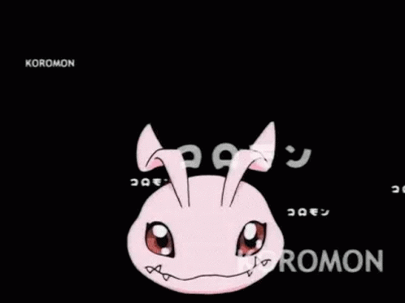

Digimon
Para otros usos de "Digimon", véase Digimon (desambiguación).
Los Digimon (デジモン Dejimon), palabra que es invariable en plural, y deriva de "Digital Monster" (デジタルモンスター Dejitaru Monsutaa, Monstruo Digital), son criaturas ficticias de la franquicia japonesa Digimon. Tienen un rol principal en todas las series de anime y manga, y también en el juego de cartas, los videojuegos y demás merchandising. Digimon incluye la gran mayoría de criaturas que habitan en el plano alternativo conocido como Digital World.
Origen
Un día, un virus que poseía inteligencia artificial se diseminó por todos los computadores del mundo. Este virus evolucionó de una manera similar a esa de los organismos vivientes, cambiando su apariencia y naturaleza en la Red[1] (una teoría indica que esto se debió a los experimentos de Yggdrasill para crear vida artificial[2]), convirtiéndose en la forma de vida digital conocida como los "Monstruos Digitales", que fueron descubiertos por primera vez en 1997[3].
En Digimon Tamers se propone la idea de que un grupo de jóvenes, estudiantes de programación de la Universidad de Palo Alto, conocidos como el "Wild Bunch" (Grupo Salvaje), fueron los creadores de las formas de vida digitales conocidas como Digimon. Sin embargo, la universidad abandono el proyecto y le vendió los derechos de los Digimon a Bandai, quienes comenzaron a crear su linea de juguetes. Mientras tanto, los Digimon escaparon del experimento y entraron a la red de comunicaciones del globo, eventualmente llegando al Mundo Digital.

Características
Los Digimon son formas de vida artificial, creados por bits y piezas perdidas de datos de computadoras, que viven dentro de los aparatos electrónicos. Ellos han modificado este mundo virtual, transformándolo en el Digital World, un plano paralelo a la Tierra, conectado a este por la red de computadores del planeta.
Los Digimon nacen de un Digitama, y eventualmente crecen durante un proceso conocido como Evolución, en el cual sufren una serie de cambios físicos, y en el mayor de los casos, un incremento en sus poderes. Algunos Digimon actúan de forma bestial, guiados por sus instintos salvajes, mientras que otros poseen inteligencia, sentimientos y personalidad humana.
Los Digimon son programas primitivos creados por el hombre. Ellos poseen inteligencia artificial, y al ser seres abstractos, solo pueden vivir en el océano digital —el Internet. Su meta básica, principal y única es enfrentarse a otros Digimon en batalla y ganar. Es por esta razón que los Digimon llaman a su modo de vida "el mundo de las batallas". Este instinto básico de batallar esta escrito en lo más profundo de su Digicore, y sin embargo, los Digimon no tienen ningún idealismo moral de lo que es "batallar". Cuando ellos se encuentran con otro Digimon y se interesan en este, la única forma de comunicarse con él y entenderse es por medio de la "batalla". El final de la batalla no significa el fin para el perdedor: el Digimon ganador "carga" (o absorbe) los datos de su rival caído, y los usa para ganar más energía y así poder seguir evolucionando. Este es su verdadero instinto básico.
Debido a la inestabilidad de la barrera que separa al Mundo Real del Digital World, algunos Digimon pueden realizarse, al viajar a través de los portales dimensionales. Muchos Digimon desean viajar al Mundo Real, pues saben que aliándose a un humano, pueden volverse mas poderosos y acelerar su proceso evolutivo. Ademas, gracias a la interacción con sus tamers, los Digimon aprenden a comunicarse de formas diferentes a la batalla, como la amistad y el trabajo en equipo.
El ciclo de vida de un Digimon es casi siempre el mismo: nacen de un Digitama, evolucionan y eventualmente mueren, desintegrándose en fragmentos infinitesimales de información. La muerte de un Digimon puede ser por muerte natural, o por muerte en batalla. La muerte natural ocurre cuando el Digicore se ha desgatado por el proceso de sobre escritura del núcleo, conocido como "longevidad". Cuando esto ocurre, un Digimon crea una copia de sus datos (como recuerdos y demás) y la deposita en un Digitama, y de esta forma renace.
Pero si el Digimon muere antes de terminar su proceso de "longevidad", es enviado al Dark Area, donde Anubimon, el juez de los muertos, juzga sus acciones en vida. Si el Digimon fue bueno, Anubimon lo resucita en el Pueblo del Inicio como un Digitama. Al ser resucitado de esta manera, el Digimon pierde todos sus recuerdos y experiencia de su vida anterior. Si el Digimon en cambio a sido malvado, Anubimon lo condena al Dark Area. Existen otros Digimon ademas de Anubimon, que pueden resucitar a los Digimon muertos en Digitamas.
La reproducción de un Digimon puede ocurrir de dos maneras. La primera es de forma asexual. Un Digimon de la etapa madura en adelante esta capacitado para crear un Digitama con una parte de sus datos y así, dar a luz a un descendiente. Esta es una clara muestra de que la habilidad de copiar datos para crear Digitamas no esta limitada al momento de la muerte.
La segunda es a través del cruce de datos, en donde dos digimon dan parte de su información para crear un nuevo Digitama, en el cual nacerá una un nuevo Digimon. Este tipo de cruces generalmente da nacimiento a las sub-especies de los Digimon.
Clasificacion
El Atributo (種 Shu) se refiere al tipo de archivo de computadora que un Digimon representa. Existen al menos cinco atributos: Vacuna(VA), Data(DA), Virus(VI) , Neutral(NA) , Variable(BA) y Desconocido. Muchos Digimon suelen tener versiones de cada uno de los atributos. Debido a esto, un Digimon puede ser de un tipo diferente y tener ataques distintos al mismo Digimon de un atributo diferente.
Los atributos también sirven para clasificar las personalidades de los Digimon. Los Digimon del atributo Vacuna tienden a ser buenos, con una gran determinación de luchar contra la maldad y detener las injusticias, mientras los Virus tienden a ser malvados (excepcion Guilmon) , con una gran sed de poder y dominación. Los Data pueden llegar a ser buenos o malvados, pero prefieren tomar las situaciones con calma. Estos atributos se manejan de forma similar al juego de piedra, papel o tijera, donde Virus normalmente tiene ventaja contra Data, y este a su vez la tiene contra Vacuna, y este ultimo la tiene contra Virus.
El atributo Libre, que perteneció a los Digimon del tipo Antiguo, no presenta ninguna ventaja o desventaja contra los otros atributos, y el atributo Variable, exclusivo de los Digimon Híbridos, simplemente copia el atributo de su oponente. El atributo Desconocido se usa para designar a los Digimon que han sido clasificados como entes no identificados, y parece tener ventaja contra los tres primeros atributos.